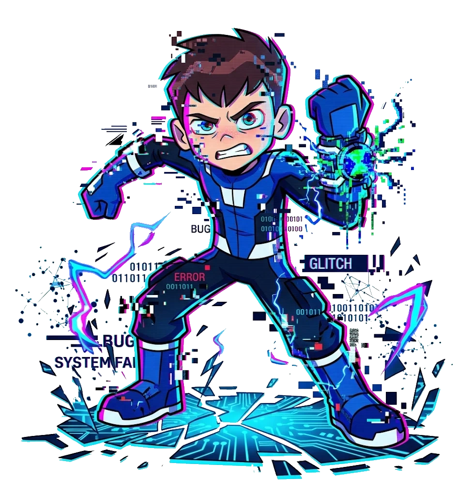

GLITCH BEN
- Espécie: Híbrido Humano / Mecamorfo Galvânico
- Planeta: Terra / Galvan B
- Habilidade: Assimilação Tecnológica
- Elemento: Tecnologia / Glitch
- Aparição: Ben 10: Innervasion
- Status: Ativo (Raro)
← Voltar para a Coleção
GLITCH BEN
"Acho que o Omnitrix deu uma pequena travada..."
Visão Geral
Glitch Ben é uma anomalia digital criada dentro do núcleo do Omnitrix a partir da fusão parcial do DNA humano de Ben Tennyson com o de um Mecamorfo Galvânico (Ultra-T). Ele existe como uma forma de vida tecnorgânica com falhas visuais de sistema.
Habilidades e Poderes
Pode se fundir e assumir o controle de máquinas, veículos e dispositivos eletrônicos, aprimorando suas funções. Além disso, consegue gerar armas tecnológicas a partir do próprio corpo e manipular códigos e sistemas digitais do Omnitrix.